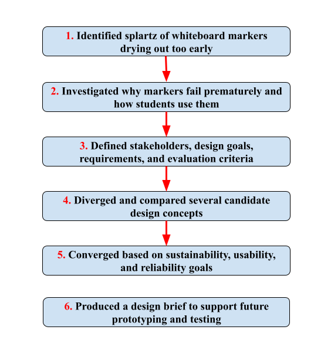
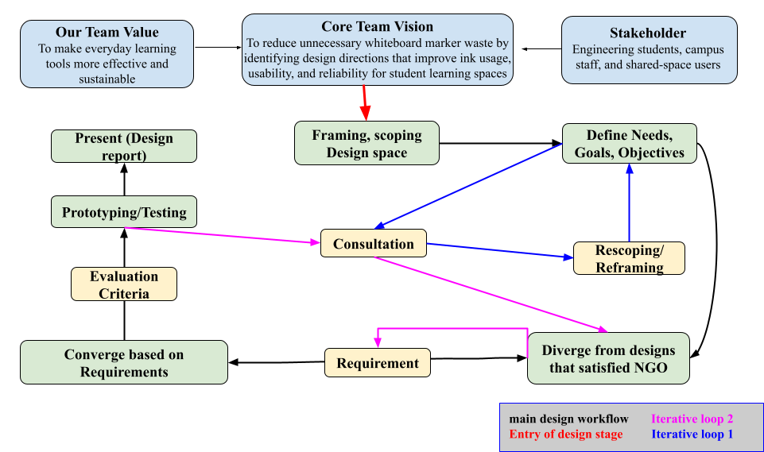
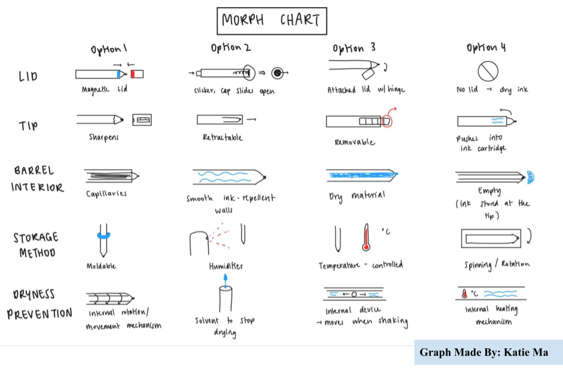
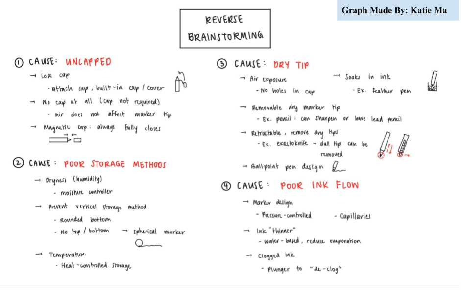
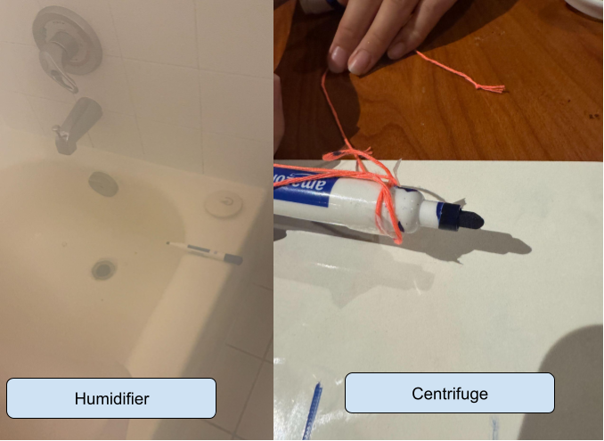

Overview
This project focused on a small but common frustration in shared learning spaces: whiteboard markers often dry out and become streaky before their ink is fully used. Rather than developing a final commercial solution, the project centered on defining the design opportunity clearly and building a strong engineering design brief around it. We investigated why premature solvent evaporation and poor ink flow reduce marker lifespan, and framed the problem in terms of sustainability, usability, and reliability for Engineering Science students at the University of Toronto.
The workflow diagram below shows the process used to clarify the problem, explore realistic design directions, and build a strong foundation for later concept development and prototyping.

Design Process & Key Design Decisions
As a group of first-year engineering students, we were still developing our understanding of engineering design, so guidance from lectures, tutorials, and especially TA feedback became central to how the project progressed. Rather than moving directly toward a final concept, much of our work focused on revisiting the problem itself by rescoping, redefining needs and objectives, and adjusting requirements as our understanding became clearer. The diagram below shows how consultation shaped the project across multiple stages.

The most important decision in this project was to frame the opportunity not simply as fixing dried-out markers, but as improving overall ink usage in a way that remained sustainable, usable, and reliable for students. That shift in framing gave the project clearer direction by linking a small everyday frustration to broader design priorities and measurable criteria.
CTMF
1. Pairwise Comparison
Pairwise comparison is a converging tool that ranks options through a series of head-to-head comparisons. In this project, it gave us a structured way to narrow candidate concepts by comparing them against priorities that later informed our requirements and evaluation criteria, including ink usage, cost reduction, ease of use, noise, reliability, and safety.
The image below shows the chart we used to compare different design options.

The tool was especially useful because different concepts each had their own strengths, and pairwise comparison gave us a more organized way to debate trade-offs without losing sight of the overall design goals. I found it valuable because it turned a potentially messy team discussion into a clearer process for convergence.
Pairwise comparison helped the project by making concept selection more systematic and less dependent on personal preference. Since several ideas seemed promising in different ways, this tool gave our team a fairer method for deciding which ones best matched the priorities of the brief. I think one strength of pairwise comparison is that it makes trade-offs more visible and easier to discuss as a team. Instead of arguing in general terms, we had to compare options directly and justify our reasoning. At the same time, one weakness is that the outcome still depends on the criteria chosen and how the team interprets them, so the process is structured but not completely objective. In the future, I would use pairwise comparison when I need to narrow multiple ideas in a clear and transparent way, especially when a team needs to make decisions efficiently. I would also make sure the comparison criteria are well defined beforehand, so the results are more consistent and meaningful.
2. Morph Chart
A Morph chart is a diverging tool used to generate concepts by breaking a product into functional parts and exploring different ways each part could be modified. In this project, it gave us a structured way to examine the whiteboard marker as a system and identify multiple points where drying, ink usage, and usability could be improved.
The chart below shows the morphological analysis we used to explore these design possibilities.

The morph chart helped the project by turning one design problem into several smaller design opportunities. Instead of searching for one immediate solution, we could explore changes to specific parts of the marker and then combine them into new concepts. This made our ideation process more systematic and helped us produce a wider range of possible designs. One strength of the morph chart is that it encourages creativity while still keeping ideas connected to the functions of the product. One weakness, however, is that it can produce combinations that look interesting on paper but are not realistic to build or test. In future projects, I would use the morph chart when I want to generate many concept directions in a structured way, but I would also be more careful about filtering out unrealistic combinations earlier.
3. Reverse Brainstorm
Reverse brainstorming is a diverging tool that approaches a problem by asking how it could be caused or made worse before asking how to solve it. In this project, that was especially useful because whiteboard markers are such familiar everyday objects that it was easy to think about the problem too narrowly.
We used reverse brainstorming in early stage of this project to identify the main conditions that cause markers to dry out or perform poorly by doing both primary and secondary research, which gave us a clearer starting point for divergence.

This tool was helpful because it made our early design work more specific. Rather than discussing the problem in a general way, we could point to particular conditions that our concepts should respond to. That improved the quality of our later ideas and made them easier to justify. A strength of reverse brainstorming is that it exposes details that might be missed in a more direct discussion of solutions. A weakness is that it extends the early analysis stage, which can be difficult in a time-limited project if the team does not move on efficiently. In future projects, I would use reverse brainstorming when I need a clearer foundation for ideation, especially for problems that seem simple at first glance.
4. Verification
Verification is a representing tool used to check whether a design concept meets the requirements established earlier in the project.
In this project, verification was based on the requirements and evaluation criteria we had developed around ink usage, cost reduction, ease of use, noise, reliability, and safety. These criteria gave us a clear basis for judging whether a concept was not only interesting, but also realistic and aligned with the design priorities of the brief.
We carried out initial testing on several candidate concepts, including centrifuge, humidifier, and clicker-based designs, using dried whiteboard markers collected for the project. Before testing, we expected the centrifuge to be one of the strongest concepts based on secondary research, but it turned out to be much less effective than anticipated. The humidifier gave mixed results, while the clicker concept performed far better than expected.

Verification helped the project by testing whether our ideas actually worked rather than only seeming convincing in discussion. This made the design process more evidence-based and showed us that some assumptions were wrong. One strength of verification is that it can challenge expectations and reveal which concept performs best in practice. One weakness is that the results depend heavily on how the testing is set up, so limited testing can also limit the conclusions. In future projects, I would treat verification not just as a final check, but as an important stage for learning, since it can reshape design decisions and improve later iterations.